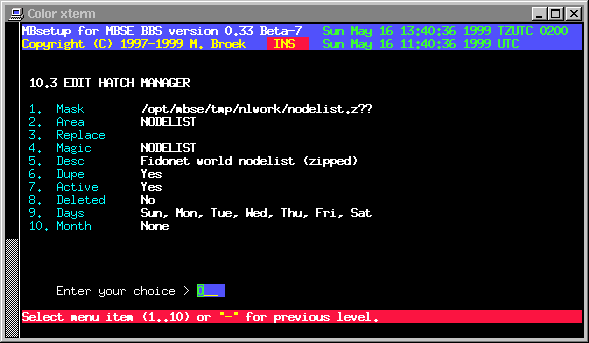

Last update 10-May-2002
MBSE BBS Setup - File Echo's Setup - Hatch Manager.
Introduction.
Hatch files is nothing more than entering a new file into a file echo. That file is searched for on your system in a specific directory with a certain filemask. This can be for example a new created nodelist or an allfiles listing. Everytime mbfido tic is run it will scan for files defined in this setup. If such a file is found, a special .tic file is written and stored in the mailers inbound directory. When the mbfido starts processing .tic files, that new hatched file will be processed as if it was received form another system. To let this work, you obviously need an existing TIC area.
The filenames to hatch may be long filenames as long as there are no spaces in it. In the TIC file a short filename will be created for the old style tic processors. The long filename is inserted in the TIC file as well. The short filenames are created in the same way as windows does.
Hatch Manager Setup.
Mask The path and filename mask to search for.
"?" matches any character, "#" matches digits and "@" matches
upper or lowercase letters. Except for the "@" the test is
case sensitive.
Area The area to hatch this file in.
Replace The filename to replace, ie. "nodelist.z*"
Magic The filerequest magic name, ie. "nodelist"
Desc The description of the file, %12 in the description
means copy the 12th character of the name in place.
Dupe Check for duplicates.
Active If this area is active.
Deleted If this area must be deleted.
Days The days in the week to scan for this file.
Month The dates in the month to scan for this file.

 Back to File Echo's Setup
Back to File Echo's Setup